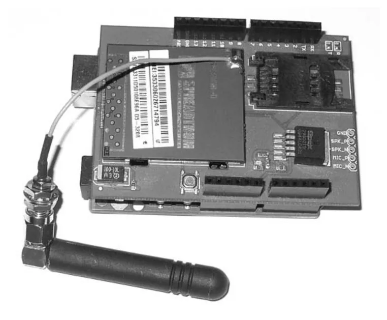
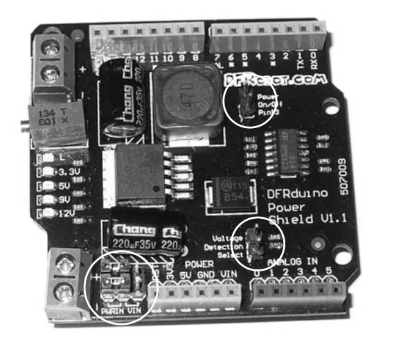
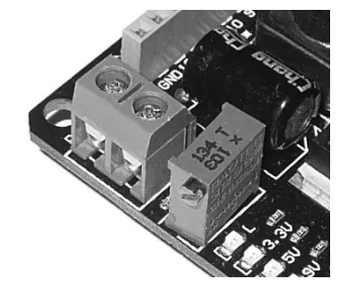
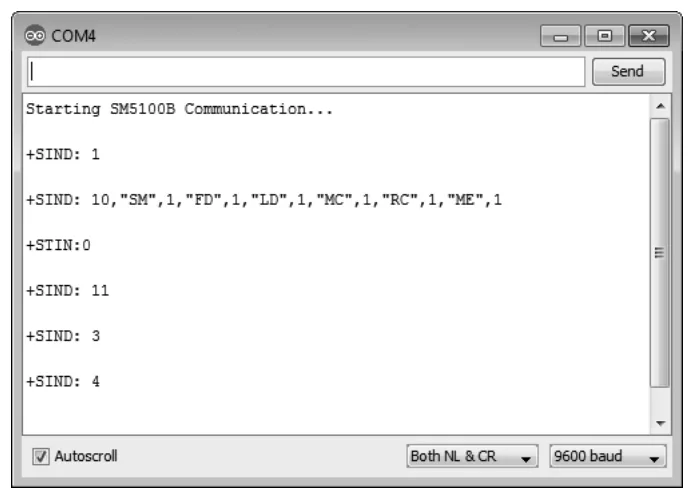
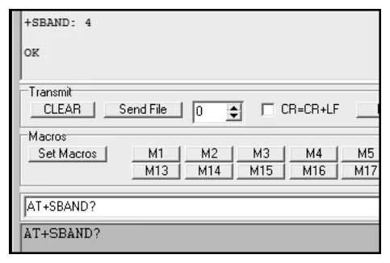
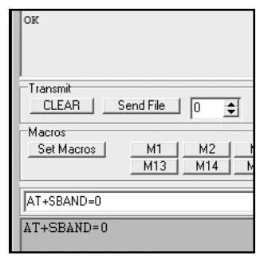
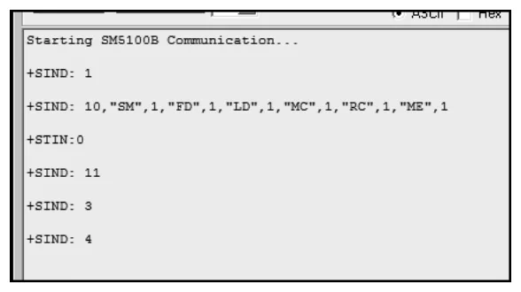
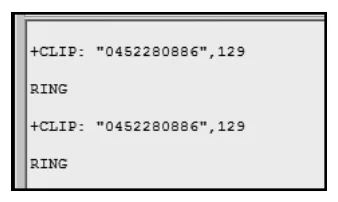

Because of hardware restrictions, the projects in this chapter will function only with an Arduino Uno or compatible board (that means no Arduino Mega boards). All the projects use a common hardware configuration, so we’ll set that up first.
You’ll need specific hardware to complete the projects in this chapter, starting with an SM5100 GSM shield and antenna, shown in Figure 20-1. This shield is available from SparkFun and its distributors. (Look for shield part number CEL-09607, stackable header set PRT-10007, and antenna part number CEL-00675.)

You’ll also need a power shield and supply. The GSM shield draws up to 2 A of current (more than is available from the Arduino) and will damage your Arduino if it’s used without external power. An Arduino-compatible power shield is available from DFRobot at http://www.dfrobot.com/, part number DFR0105, and shown in Figure 20-2.

Finally, you’ll need an external power supply. This can be a DC plug pack or wall wart power supply brick (or a large 7.2 V rechargeable battery, solar panel/battery source, 12 V battery, or similar, as long as it doesn’t exceed 35 V DC) that can offer up to 2 A of current.
Preparing the Power Shield
Prepare the power shield, and (this is important) set its output voltage for use before attaching it to any other parts. To do this, first remove the jumpers over the top-right and bottom-right header pins (circled on the right side of Figure 20-2). Next, ensure that the two jumpers are set horizontally across the PWRIN pairs at the bottom-left of the shield (circled at the bottom of Figure 20-2).
Now connect your external power supply to the PWRIN terminal block at the bottom-left corner of the power shield. Make sure to match the positive (+) and negative (−) wires correctly. Then turn on the power, and measure the voltage at the PWROUT terminal block at the top-left of the shield while using a small screwdriver to adjust the blue potentiometer, shown in Figure 20-3.

Continue these adjustments until the voltage measured by the multi meter from the power shield is 5.0 V DC. When you’re done adjusting, turn off the power supply shield.
Now you can put the pieces together:
- Insert the SIM card into the GSM shield.
- Plug the GSM shield into the Arduino Uno.
- Add the power shield on top.
- Run a small wire from the positive PWROUT terminal block on the power shield to the 5V pin on the shield, and run another wire from the negative PWROUT terminal block to the GND pin on the power shield. These two wires will feed the high-capacity 5 V power from the power shield into the Arduino.
Hardware Configuration and Testing
Now let’s configure and test the hardware by making sure that the GSM module can communicate with the cellular network and the Arduino. After assembling the hardware and the SIM card, enter and upload the sketch shown in Listing 20-1.
// Listing 20-1
// Written by Ryan Owens - SparkFun CC by v3.0 3/8/10
❶ #include <SoftwareSerial.h> // Virtual serial port
❷ SoftwareSerial cell(2,3);
char incoming_char = 0;
void setup()
{
//Initialize serial ports for communication.
Serial.begin(9600);
❸ cell.begin(9600);
Serial.println("Starting SM5100B Communication...");
}
void loop()
{
//If a character comes in from the cellular module...
if( cell.available() > 0 )
{
//Get the character from the cellular serial port.
incoming_char = cell.read();
//Print the incoming character to the terminal.
Serial.print(incoming_char);
}
//If a character is coming from the terminal to the Arduino...
if( Serial.available() > 0 )
{
incoming_char = Serial.read();//Get the character coming from the terminal
cell.print(incoming_char); //Send the character to the cellular module.
}
}This sketch simply relays all the information coming from the GSM shield to the Serial Monitor. The GSM shield has a serial connection between it and Arduino digital pins 2 and 3 so that it won’t interfere with the normal serial port between the Arduino and the PC, which is on digital pins 0 and 1. We set up a SoftwareSerial virtual serial port for the GSM shield at ❶, ❷, and ❸. (The required library is included with the Arduino IDE.)
Once you’ve uploaded the sketch, open the Serial Monitor window and wait about 30 seconds. You should see data similar to that shown in Figure 20-4.
You’re looking for messages that start with +SIND: because they tell you about the status of the GSM module and its connection with the network. If your messages end with +SIND: 4, your shield has found and connected to the network, and you can move on to Project 63. However, if your messages end with a +SIND: 8, change the frequency that the module uses, as described in the next section.

Changing the Operating Frequency
To change your module’s operating frequency, follow these steps:
- Close the Arduino IDE and the Serial Monitor. Then load the terminal software used for Project 48.
- Select the same COM port used by the Arduino board, and click Connect.
- Look up the frequency used by your cell network in Table 20-1, and note the band number.
| Frequency | Band |
|---|---|
| GSM 900 MHz | 0 |
| DCS 1800 MHz | 1 |
| PCS 1900 MHz | 2 |
| GSM 850 MHz | 3 |
| GSM 900 MHz and DCS 1800 MHz | 4 |
| GSM 850 MHz and GSM 900 MHz | 5 |
| GSM 850 MHz and DCS 1800 MHz | 6 |
| GSM 850 MHz and PCS 1900 MHz | 7 |
| GSM 900 MHz and PCS 1900 MHz | 8 |
| GSM 850 MHz, GSM 900 MHz, and DCS 1800 MHz | 9 |
| GSM 850 MHz, GSM 900 MHz, and PCS 1900 MHz | 10 |
- Enter the command
AT+SBAND?and press enter. The module should reply with the current band settings, as shown in Figure 20-5.


- To set the GSM module to the required band, enter the command
AT+SBAND=x, wherexis the band number selected from Table 20-1. The shield should return OK, as shown in Figure 20-6. - Finally, reset the Arduino and make sure that it connects to the network and displays
+SIND: 4. Connect a jumper wire between the GND and RST pins on the Arduino for a second to trigger a reset, and the status codes should appear on the terminal screen, as shown in Figure 20-7.

One final test is needed: Call your GSM shield using another telephone. If you have outgoing caller ID activated on the phone you’re calling from, the number should appear in the GSM shield output, as shown in Figure 20-8. (Note that your number will replace the 0452280886 number used in the figure.)

At this stage, you can be confident that everything is working as expected. Now on to the projects!